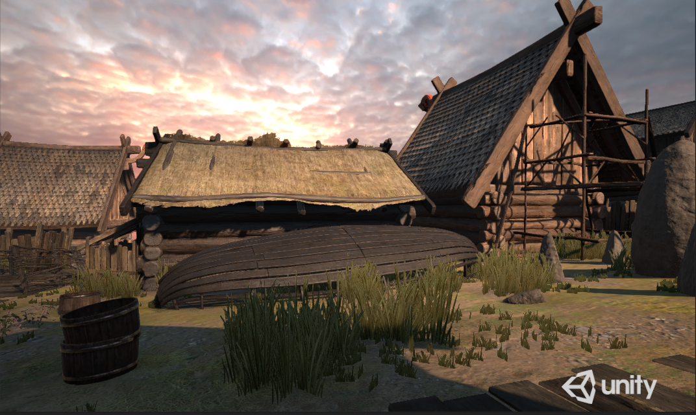
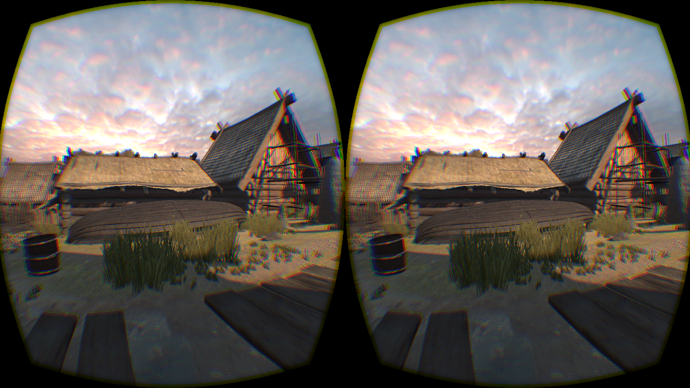

FlashBack Homepage
Welcome to the homepage for FlashBack, a mobile VR solution that uses aggressive rendering memoization to bring full-quality VR experiences to weak mobile devices.FlashBack is currently under submission to MobiSys 2016, so we kindly ask that you refrain from sharing or otherwise distributing any material on this page. Please return for additional details after the MobiSys notification deadline in March. Thanks!
Please enjoy the following videos demonstrating the performance of FlashBack. Note that the black regions on the sides of the Oculus screen during local execution are due to the attempted correction for the lack of new frames for the latest head pose. This occurs when frames are not generated quickly enough and the previous frame is reused, a common occurrence during local execution.
High-quality Static Scene: Viking Village
As discussed in the paper, we use Viking Village from the Unity Asset Store as our high-quality test scene. The screenshots below show what the starting point of Viking Village looks like on both a normal PC view (left) and through the Oculus Rift (right). 
{kind=link}
{kind=link}
In the following video, locally executing Viking Village results in a severely reduced framerate, making it unviewable at less than 9 FPS. FlashBack presents the same scene smoothly despite its high graphic complexity.
Dynamic Objects
In the following video, locally executing even a simple scene with two dynamic objects causes another unpleasant viewing experience, with an average framerate of 18 FPS. FlashBack maintains a high framerate even with multiple independent dynamic objects.Note that the animated horse cart and bird are animated such that they intentionally disappear from the screen and loop back to their original off-screen starting position, so this is expected behavior.